9 Data visualization
“The simple graph has brought more information to the data analyst’s mind than any other device.” – John Tukey
This lab is all about preparing publication-ready figures with ggplot2 and related packages. ggplot2 uses elegant syntax and it implements “The Layered Grammar of Graphics”.
Before we begin, let’s review a few key points for good figures:
Be clear and avoid confusion. Presenting too much information often results in messy figures. Figures inconsistent in colour, symbols, etc. can easily confuse readers.
Only use additional aesthetic effects when necessary. Everything in a graph has a purpose. The primary objective of a figure is to inform, not to look fancy (though this is a plus). When in doubt, stick to black, white, and grey.
Only use texts when necessary. Make text large. Never use Comic Sans as your font. Sans serif fonts such as Arial and Calibri are usually good bets.
Key point: the plot depends on the variables. Some plots are more appropriate for visualization than others. You have an obligation to display data responsibly. Check out The R Graph Gallery for a “dictionary” on different visualizations and the code to create them.
Recall that the tidyverse contains ggplot2 and dplyr among other packages. We’ll also load gapminder.
Hopefully by now you have a good idea of what the gapminder dataset looks like. Here’s a quick refresher:
## # A tibble: 6 x 6
## country continent year lifeExp pop gdpPercap
## <fct> <fct> <int> <dbl> <int> <dbl>
## 1 Afghanistan Asia 1952 28.8 8425333 779.
## 2 Afghanistan Asia 1957 30.3 9240934 821.
## 3 Afghanistan Asia 1962 32.0 10267083 853.
## 4 Afghanistan Asia 1967 34.0 11537966 836.
## 5 Afghanistan Asia 1972 36.1 13079460 740.
## 6 Afghanistan Asia 1977 38.4 14880372 786.9.1 A graphing template
Although we’ve presented graphs with ggplot2 in previous labs, let’s delve into the specifics of the syntax:
Everything in the initial ggplot() function is passed into the subsequent functions (i.e., GEOM_FUNCTION()). When calling ggplot(), you don’t explicitly need to write <ARGUMENT> = (ex: data = gapminder, x = lifeExp) as long as you have the variables in the correct order – just be careful you don’t mix up x and y!
ggplot2 works in a layer-by-layer manner. Take a look at this:
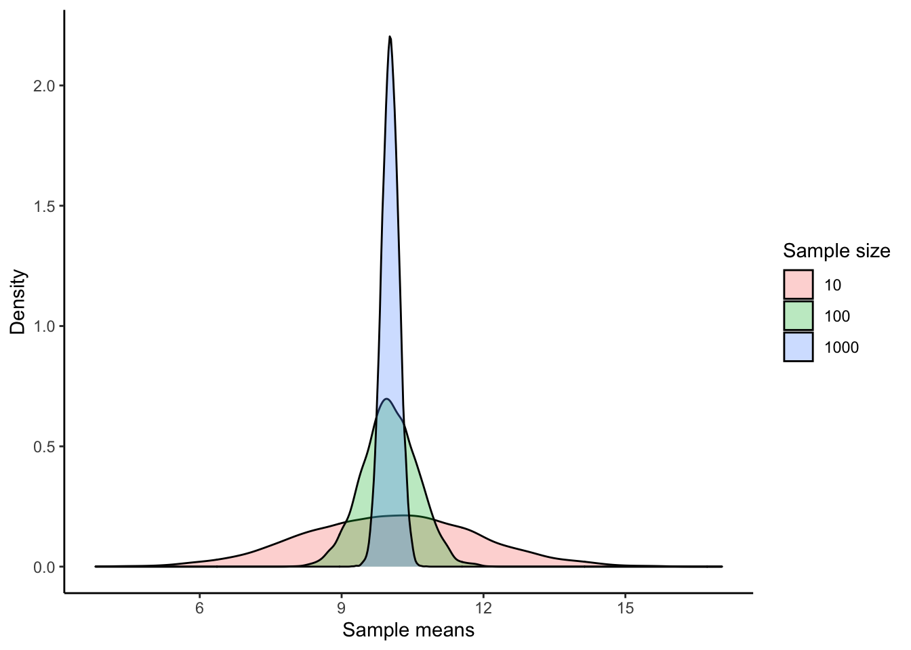
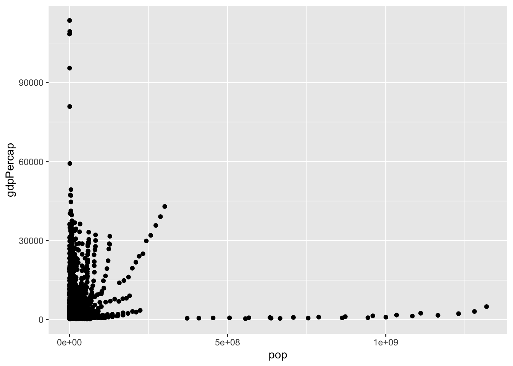
Here, the first line initializes the object and the second line adds a layer of scatter points. Unlike plotting in base R, you don’t need to specify variables using the $ operator – ggplot2 is smart enough to call it automatically for you.
I’d like to bring your attention to the + operator. This is how you add layers to the ggplot. Use + liberally to reduce excessively long lines; breaking long commands at appropriate places makes your code much more readable.
9.2 Scatter plot
Use the scatter plot when you want to see the relationship between two continuous variables.
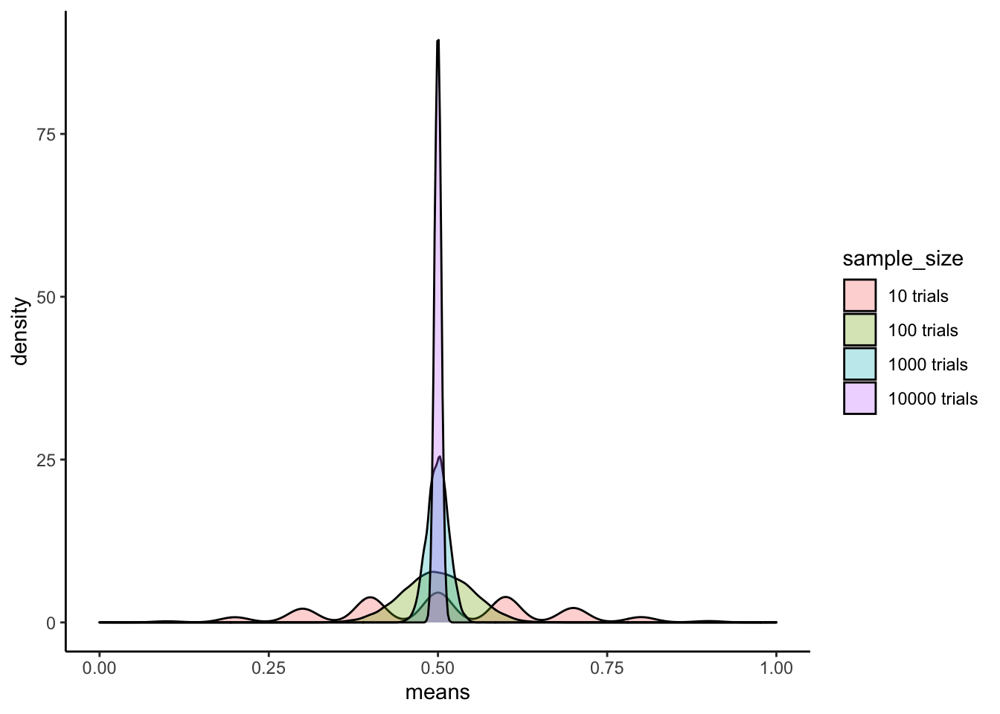
You also can save the object as a variable. To show the figure, use the show() function or simply call the object by its name.
This data might benefit using a log scale. You can either log-transform (log(gdpPercap)) or simply draw the x axis in log scale (scale_x_log10()).

9.2.1 Trend lines
It seems that there exists a positive correlation between the two variables – you might want to add a trend line. Remember, p is the object of scatter plot with x in log. We can just build from here. This just goes to show the beauty of layered graphical syntax.
## `geom_smooth()` using method = 'gam' and formula 'y ~ s(x, bs = "cs")'
You find that R used ‘gam’ model as default. ‘gam’ is the generalized additive model. Without going into the mathematical details, you would expect a curve from gam.
What if I want a straight line (i.e., linear regression)? I would want a straight line to start with. Let’s start with a linear model (lm).
## `geom_smooth()` using formula 'y ~ x'
We can also create a generalized linear model (glm). glm can be useful if your variables are not normally distributed.
## `geom_smooth()` using formula 'y ~ x'
It appears thatlm and glm don’t look too different.
Notice that lm has a little shaded region around it. This correspondends to the confidence interval of 1 standard error. To get rid of it, specify se = FALSE. While we’re at it, let’s change the colour of the line to red and decrease its thickness. Let’s also remove that pesky grey background:
scatter_trend <- p + theme_classic() + # removes grey background
geom_smooth(method = 'lm',
se = F, # remove confidence band
col = 'red', # change colour of line to red (hex colours also work: #FF0000)
size = 0.75) # set width of line
show(scatter_trend)## `geom_smooth()` using formula 'y ~ x'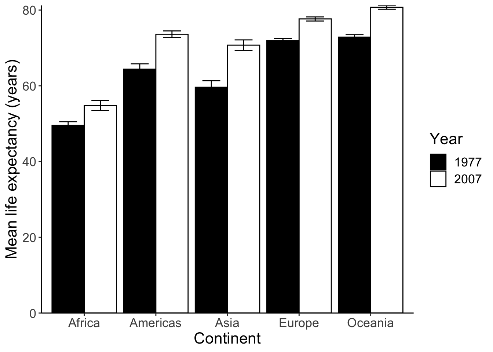
9.2.2 Facets
If you were paying careful attention, you may have noticed that we were using data from multiple years. However, this results in a messy, and potentially misleading, graph. Let’s fix this by plotting each year separately with the facet feature.
ggplot(data = gapminder, aes(x = gdpPercap, y = lifeExp)) +
facet_wrap(vars(year), nrow = 3, ncol = 4) +
geom_point(size = 0.5) +
scale_x_log10() +
theme_bw() # another ggplot2 theme
We can use faceting to split by the combination of two variables. Here I will use facet_grid to put the same values of splitting variables on the same row/column. Note that you also need to specify vars(year) and vars(continent) instead of just year and continent. This is simply to help ggplot retrieve the levels in a particular column.
gap.52.77.07 <- gapminder %>% filter(year %in% c(1952, 1977, 2007))
ggplot(data = gap.52.77.07, aes(x = gdpPercap, y = lifeExp)) +
facet_grid(rows = vars(year), cols = vars(continent)) +
geom_point() +
scale_x_log10() +
theme_bw()
9.3 Aesthetic mappings
A scatter plot places dots using x and y coordinates. What if we want to show more detail, like which point(s) correspond to a particular group? For example, what if we want to see how life expectancy vs GDP per capita varies per continent in 1977?
gap.77 <- gapminder %>% filter(year == 1977)
ggplot(data = gap.77, aes(x = gdpPercap, y = lifeExp)) +
geom_point(aes(color=continent)) +
scale_x_log10()
You can see the points from some continents, like Europe and Africa, cluster at distinct positions.
In addition to adding colours to show (categorical or continuous) groupings, we can also use
- Shape of points (categorical),
- Size of points (continuous), or
- Transparency/alpha of the points (continuous).
These options are all specified within aesthetic mappings (aes()). That is, aes() is the place you specify how you present your variables. More specifically, it’s how you map your variables to various aesthetics. To repeat an earlier point, aes() within the ggplot() function applies to ALL layers, while those in other layers only applies to that specific layer.
Here’s another example. Be careful with this as R interprets year as a continuous variable. Use as.factor() or factor() to circumvent this issue,
ggplot(data = gap.52.77.07, aes(x = gdpPercap, y = lifeExp)) +
geom_point(aes(col = as.factor(year))) +
scale_x_log10()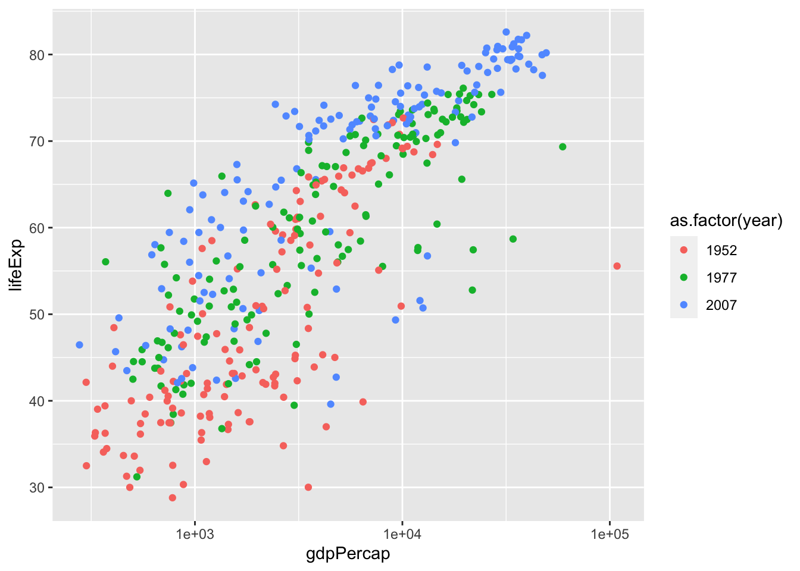
Going back to our original example of lifeExp vs gdpPercap by continent, I use stat_elipse() to enclose the points within a 95% confidence interval.
ggplot(data = subset(gapminder, year == 1977),
aes(x = gdpPercap, y = lifeExp)) +
# color only applies to the points, not the eclipses
geom_point(aes(color=continent)) +
# stat_ellipse uses level=0.95 by default
stat_ellipse() +
scale_x_log10()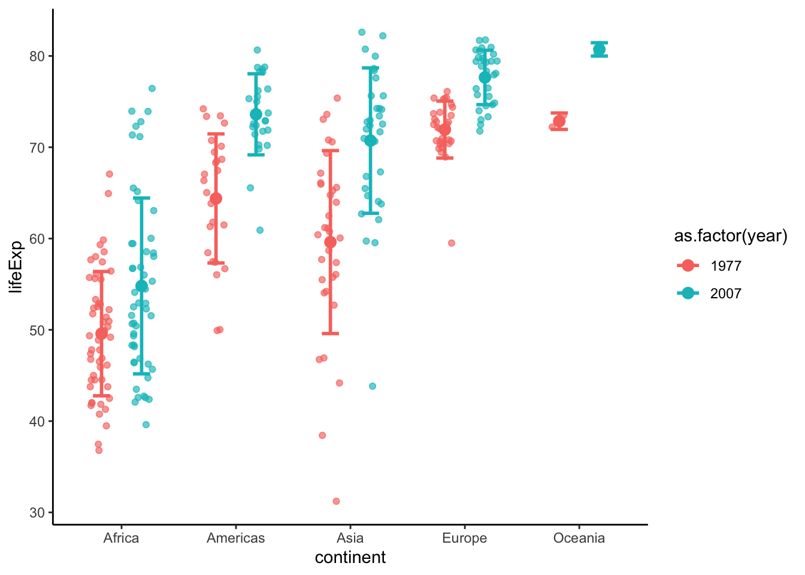
We can also create multiple ellipses to group things together. Note that color = continent is the same as colour = continent and col = continent.
ggplot(data = subset(gapminder, year == 1977),
aes(x = gdpPercap, y = lifeExp, color = continent)) +
# color applies to both points and eclipses
geom_point() +
stat_ellipse() +
scale_x_log10()## Too few points to calculate an ellipse## Warning: Removed 1 row(s) containing missing values (geom_path).
What if we want to also visualize population size in addition to grouping by continent?
ggplot(data = subset(gapminder, year == 1977), aes(x = gdpPercap, y = lifeExp)) +
geom_point(aes(color=continent, size=pop)) +
scale_x_log10()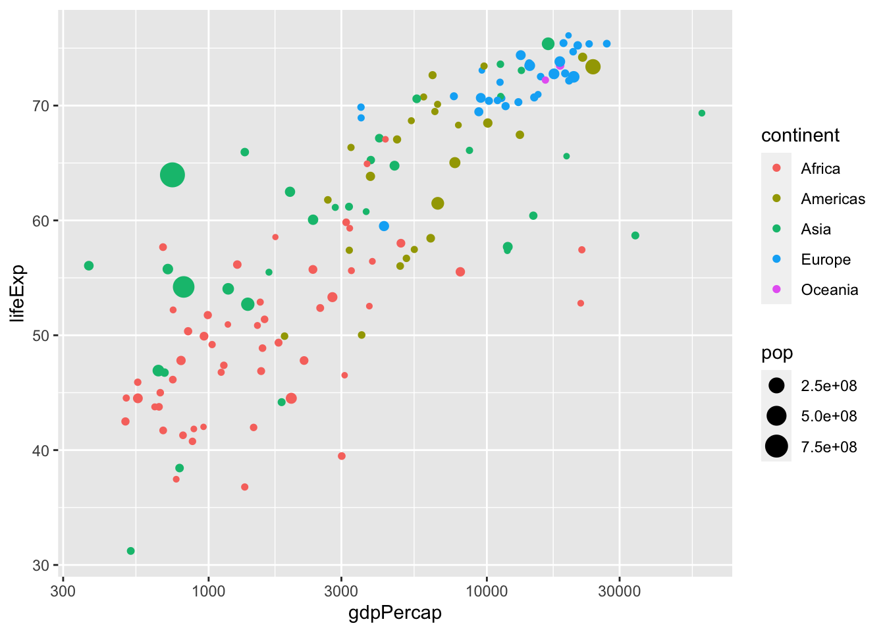
Here we run into a minor problem: some dots are overlapping. We can fix this by applying geom_jitter() with partial transparency.
ggplot(data = subset(gapminder, year == 1977), aes(x = gdpPercap, y = lifeExp)) +
geom_jitter(alpha=0.7, aes(color=continent, size=pop)) +
scale_x_log10()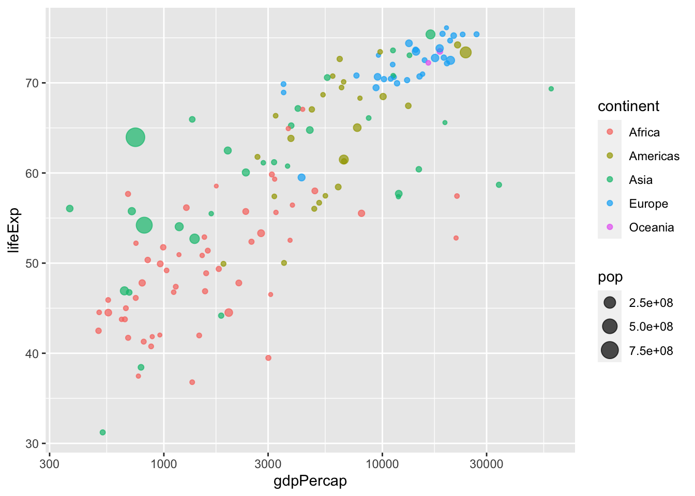
Notice that geom_jitter() adds some random variation, or jitter, to each point. While this is a handy method to address overplotting, don’t rely on it too heavily. This is illustrated in the next plot:
ggplot(data = gapminder, aes(x = gdpPercap, y = lifeExp)) +
geom_jitter(aes(color=continent, size=pop, alpha=year)) +
scale_x_log10()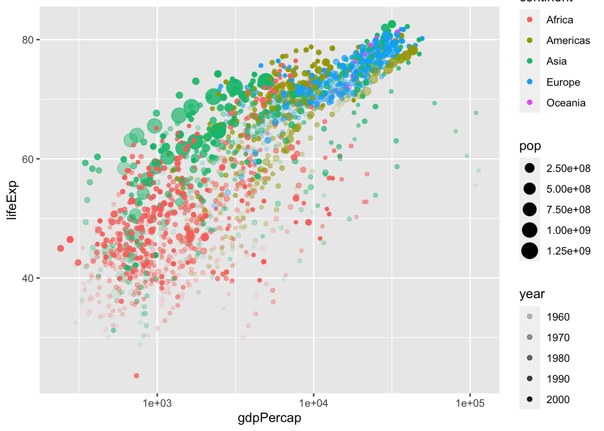
As you can see, this is a fancy figure, but also a messy figure. This plot has “information overload,” so we would like to simplify it. To reduce the amount of information, we come back to facets. Be careful with this one as R interprets year as a continuous variable. Use as.factor() or factor() to circumvent this issue,
ggplot(data = gapminder, aes(x = gdpPercap, y = lifeExp)) +
geom_jitter(alpha=0.65, aes(size=pop, color=as.factor(year))) +
facet_wrap(vars(continent)) +
scale_x_log10()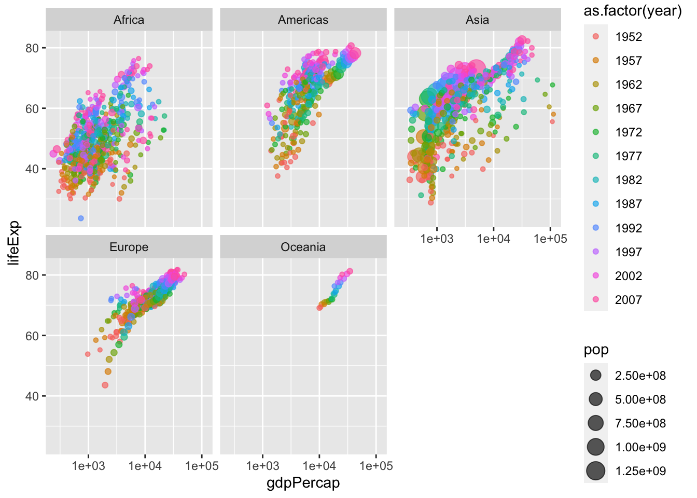
Finally, we can change the labels and text formats. Here, we can save the figure to a .png format. Alternatively, you can save the figure using the Export tab in the Plots viewing panel in RStudio.
p <- ggplot(data = gapminder, aes(x = gdpPercap, y = lifeExp)) +
geom_jitter(alpha=0.65, aes(size=pop, color=year)) +
facet_wrap(vars(continent)) +
scale_x_log10() +
labs(x = "GDP per capita", y = "Life Expectancy", size = "Population", color = "Year") +
theme_bw() + # remove the gray background
theme(text = element_text(size = 16)) # make texts larger
show(p)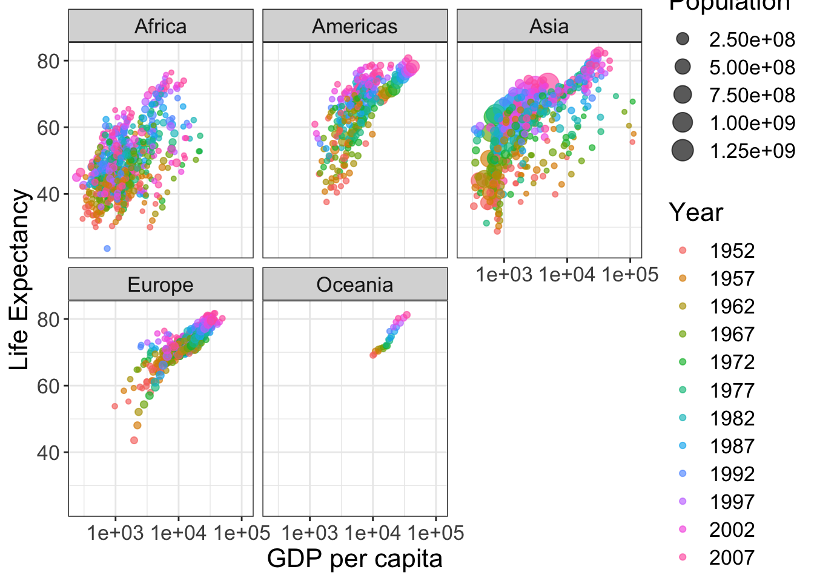
## Saving 7 x 5 in image9.4 Line plot
A line plot is another way to visualize continuous variables. This is particularly useful when
- Your observations change over time and
- You want to demonstrate a causal relationship.
Let’s elaborate on the second point. In the previous case for life expectancy and GDP, we could only observe a correlation, but cannot conclude a causal relationship. In some case, such as carrying out a laboratory experiment or a simulation study, you can precisely manipulate certain independent variables and measure other dependent variables. This way you can argue for a better causal relationship. For example, you can change the concentration of a drug treatment and measure the inhibition effect.
Let’s take a look at the life expectancy of Africa over the years. Let’s first create a scatter plot.
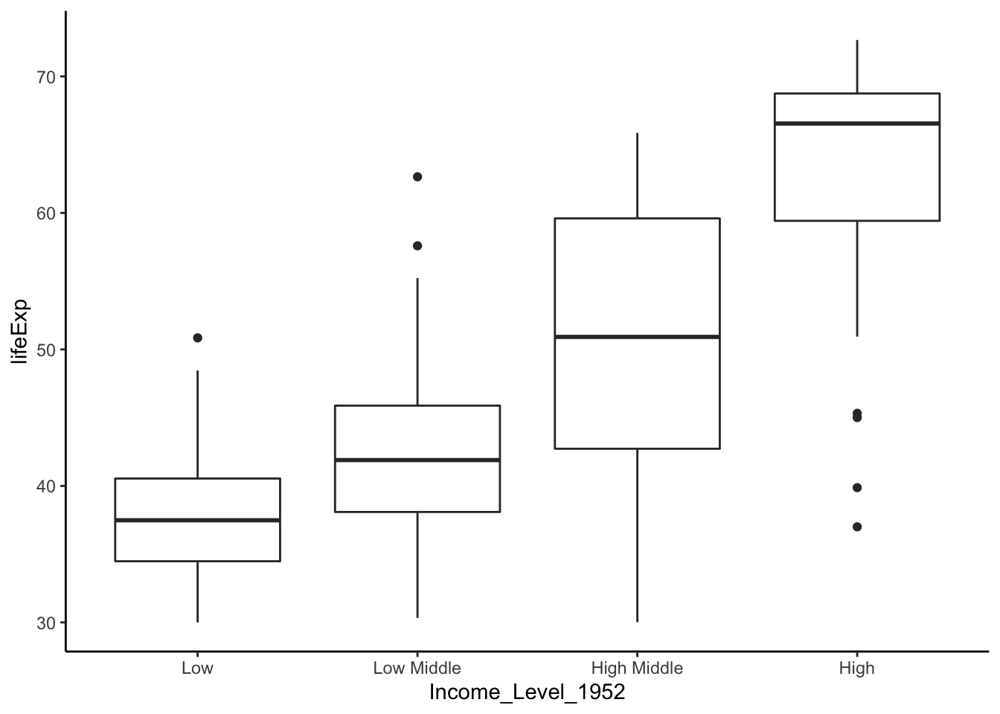
Since the points can correspond to the countries, we can connect them with lines.
ggplot(data = subset(gapminder, continent == "Europe"),
aes(x = year, y = lifeExp, colour = country)) +
geom_point() +
geom_line(aes(group = country))
Here the group = country specifies that points with the same values for the variable country should be connected in a line.
Oftentimes you want to show line plots with mean values and error bars. Unfortunately, ggplot2 can’t automatically draw error bars – you have to explicitly specify the values. We’re going to address this in the next example.
First, calculate the mean and SEM and save it to a new data frame.
df <- gapminder %>%
group_by(year, continent) %>%
summarise(mean_le = mean(lifeExp), sd=sd(lifeExp), sem = sd(lifeExp)/sqrt(n()))## `summarise()` regrouping output by 'year' (override with `.groups` argument)Next, draw a line plot with this data frame. To draw error bars, we need to specify the upper and lower limits within geom_errorbar().
lineplot <- ggplot(data = df, aes(x = year, y = mean_le, color = continent)) +
geom_line() +
geom_point() +
geom_errorbar(aes(ymin = mean_le-sem, ymax = mean_le+sem),
position = position_dodge(0.05)) # position_dodge() sets length of error bar caps
show(lineplot)
Finally, let’s format the figure nicely.
lineplot <- lineplot + labs(x = "Year", y = "Life Expectancy", color = "Continent") +
theme_classic() + # remove the gray background
theme(text = element_text(size = 16)) # set font size
show(lineplot)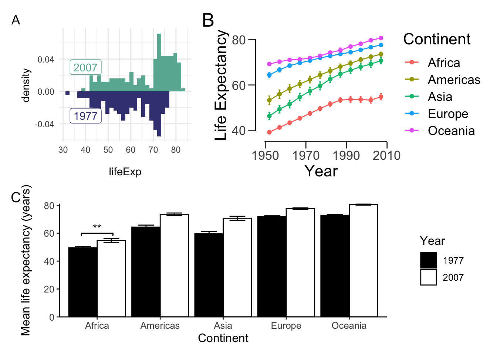
For a cleaner view with offset axis:
lineplot <- lineplot +
theme(axis.line = element_blank(), # hide the default axes
axis.ticks.length = unit(7, 'pt')) +
# specify the breaks of y-axis
scale_y_continuous(breaks=seq(40,80,20), limits=c(35,85), expand=c(0,0)) +
# specify the breaks of x-axis
scale_x_continuous(breaks=seq(1950, 2010, 20), limits=c(1945,2010), expand=c(0,0)) +
# specify the location of the new y-axis
geom_segment(y=40, yend=80, x=1945, xend=1945, lwd=0.5, colour="black", lineend="square") +
# specify the location of the new x-axis
geom_segment(y=35, yend=35, x=1950, xend=2010, lwd=0.5, colour="black", lineend="square")
show(lineplot)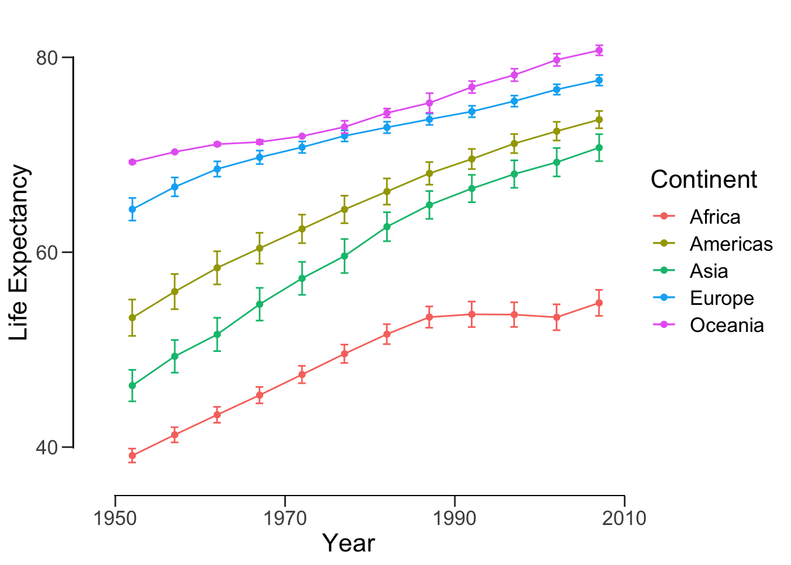
## Saving 7 x 5 in image